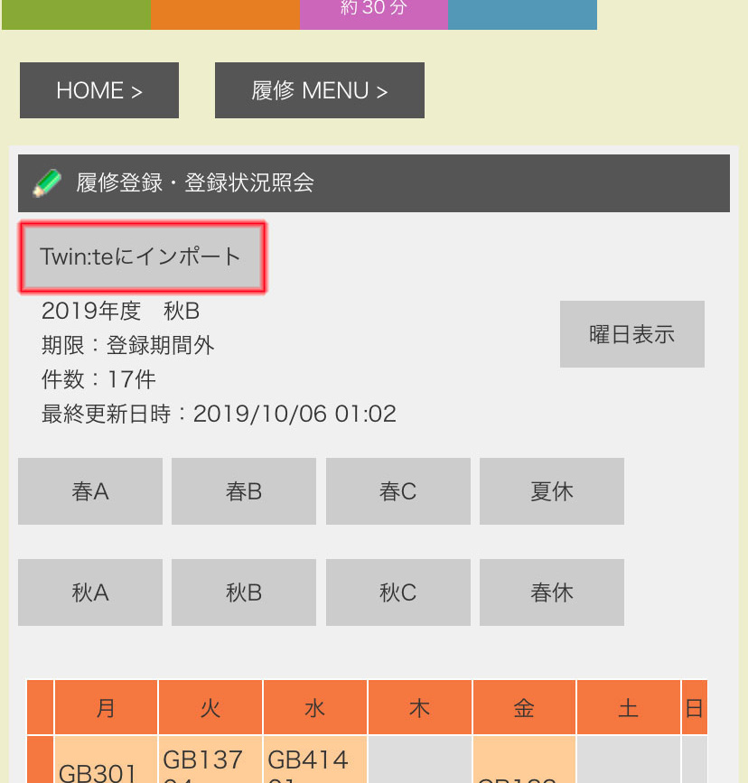
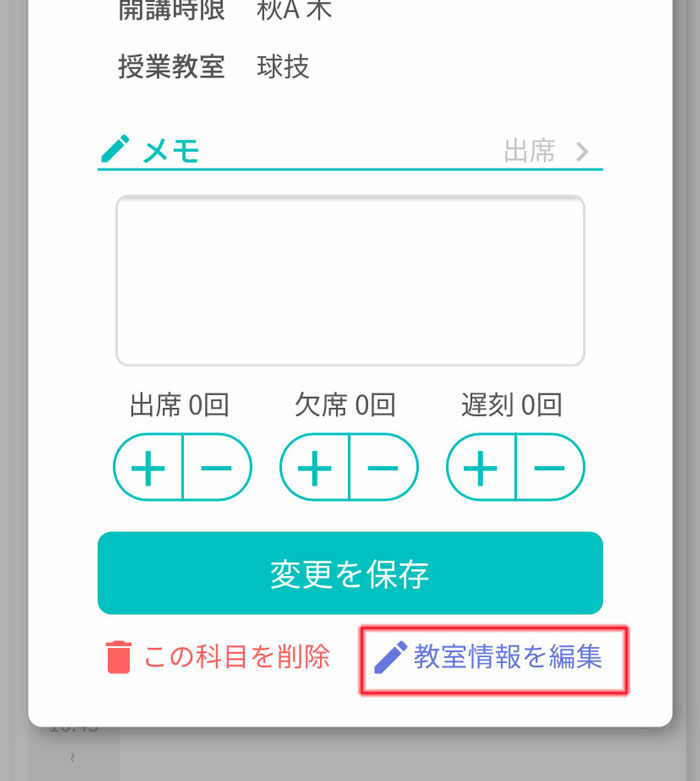

Twin:te（ついんて）とは？
筑波大生による筑波大生のための時間割アプリ
筑波大生に最適な設計になっており、いかに時間割を簡単に作るかに重きを置いています。わずか数ステップで時間割を作成・管理することができます。
現在もOSSとして保守・アップデートが行われているため、新たな機能を提案していただくことも可能です。
シラバスやメモ、出欠も簡単に管理
授業を選択するだけで時間割に授業名・教室・講師等が自動登録されます。 メモや出欠のカウント機能もあります。
どの端末でもデータ共有
アカウント連携機能
TwitterやGoogleアカウント、Appleアカウントでログインすると、複数端末でデータの共有ができます。
使い方
授業をアプリに登録する方法は様々です。また、メモの編集に加えて、自動登録された情報も皆さんご自身で変更していただくことが可能です。
授業をTwinsからインポートする方法
ご自身でTwinsにログインした上で、Twin:teに授業を自動登録する方法です。
※この機能はiOS/Androidアプリ版で利用できます。
- メニューから「Twinsからインポートする」ボタンを押してTwinsにログインします。
- 履修登録画面に行きます。まず「履修」ボタンを押してから、「履修登録・登録状況紹介」を押します。
- 「Twin:teにインポート」ボタンがあるので、タップします。すると、現在表示している学期の授業がインポートされます。 
- 完了画面が出たら完了です。他の学期もインポートする場合はTwinsの画面を他の学期に切り替えてください。
授業を手動で登録する方法
授業名や授業番号から、授業を手動で登録する方法です。kdbから授業を検索できます。
- 授業の登録されていない場所をタップします。
- 授業名や授業番号を入れて授業を検索します。
- 該当する授業にチェックを入れて「時間割に追加」を押します。
メモや教室情報を編集する方法
メモや教室の情報を編集する方法です。
- 編集したい講義をタップします。
- 教室を変更したい場合は右下の「教室情報を編集」をタップします。メモのみする場合はこの動作は必要ありません。 
- 教室やメモを入力してください。
-
入力が終わったら「変更の保存」ボタンを押してください。押さないとメモを含めて変更が保存されません。

Q&A
このサービスは大学公式のものですか？
いいえ。筑波大生の有志によるものです。
これは筑波大生によって構成されたグループ（Twin:te）が、日常の不便を解消するために製作したサービスです。
主な構成員は制作メンバーをご覧ください。
Twin:teが保存するデータは何ですか？
ユーザーの複数端末を紐付けるためのデータのみを保存しています。
複数端末で共有するためTwin:teはユーザーがTwin:teのログインに利用したTwittterアカウント/Googleアカウントと、保存した時間割の情報（メモ・出席欠席遅刻回数・変更した教室情報等を含む）
を結び付けて保存します。
この情報はログインしたユーザーのみが見ることができる物であり、他のユーザーには共有されません。
なお、Twin:teはログインに利用したTwittterアカウント/Googleアカウントのパスワードや、学籍番号等の情報は一切保存しておりません。
詳細は 利用規約をご覧ください。
利用は無料ですか？
利用は完全無料です。
また、広告もございません。 なお、寄付を受け付けております。
Twinsの履修情報を自動で読み込めますか ?
はい。Twin:teのサーバーがユーザーの情報を取得することなく、Twinsの情報を読み込めます。
ユーザーが自分でTwinsにログインしたあと、「Twin:teにインポート」ボタンを押すことで利用できます。
ユーザーが自分でTwinsにログインをするので、Twin:teはユーザーの学籍番号・パスワードを取得することはございません。
この機能はiOS・Android版Twin:teのみで利用できます。
この機能に不安を覚える場合は他の時間割登録方法をご利用いただけます。